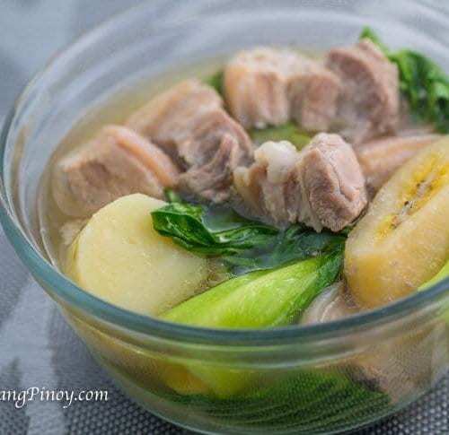

Nilagang Baboy

Description
Nilagang Baboy or Pork Nilaga is translated as boiled pork in Filipino. Nilagang Baboy is eaten with steamed white rice and is best served with patis (fish sauce) and siling labuyo (birds eye chili).
Ingredients:
2 lbs. pork belly or shoulder, cubed
1 medium cabbage quartered
2 medium potatoes peeled and cubed
4 pieces ripe saba banana sliced in half crosswise
6 to 8 cups beef or pork broth
1 teaspoon whole peppercorn
3 tablespoons cooking oil
Steps:
Heat the cooking oil in a deep cooking pot.
Once the oil becomes hot, saute the onion.
Add the whole pepper corn. Continue to cook for 20 seconds.
Put-in the pork. Cook until the color turns light brown (about 3 to 5 minutes).
Pour-in the beef or pork broth. Bring to a boil. Simmer for 45 to 60 minutes or until the pork becomes tender.
Add the saba banana and potatoes. Stir and cook for 12 minutes.
Put-in the cabbage. Add salt to taste. Stir. Cover and continue to cook for 3 minutes.
Transfer to a serving bowl. Serve with a spicy fish sauce dipping sauce.
Share and enjoy!